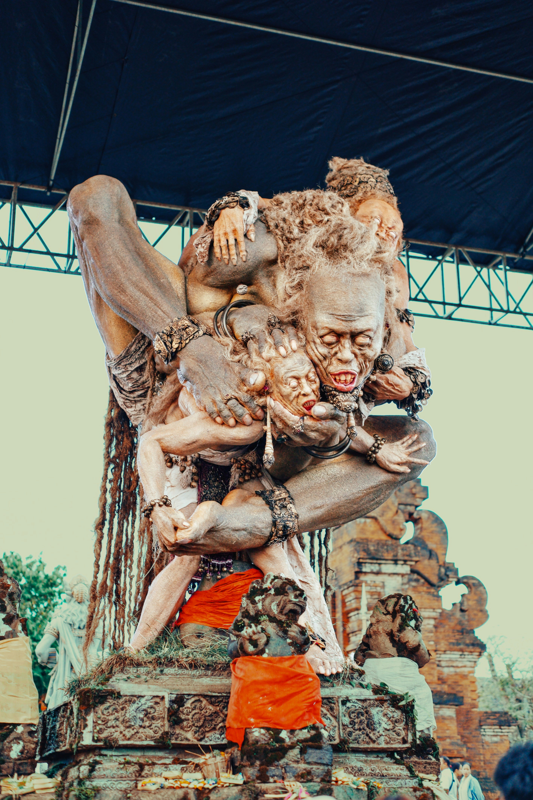
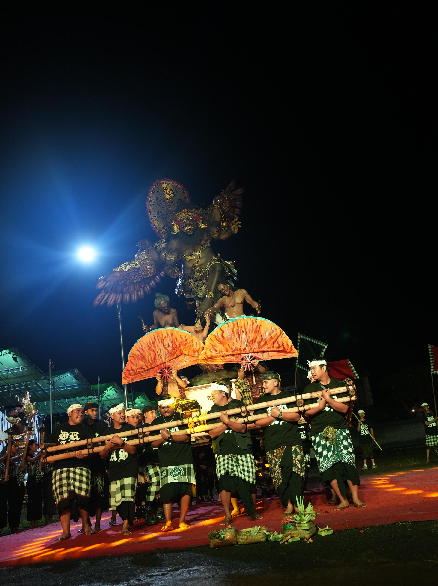
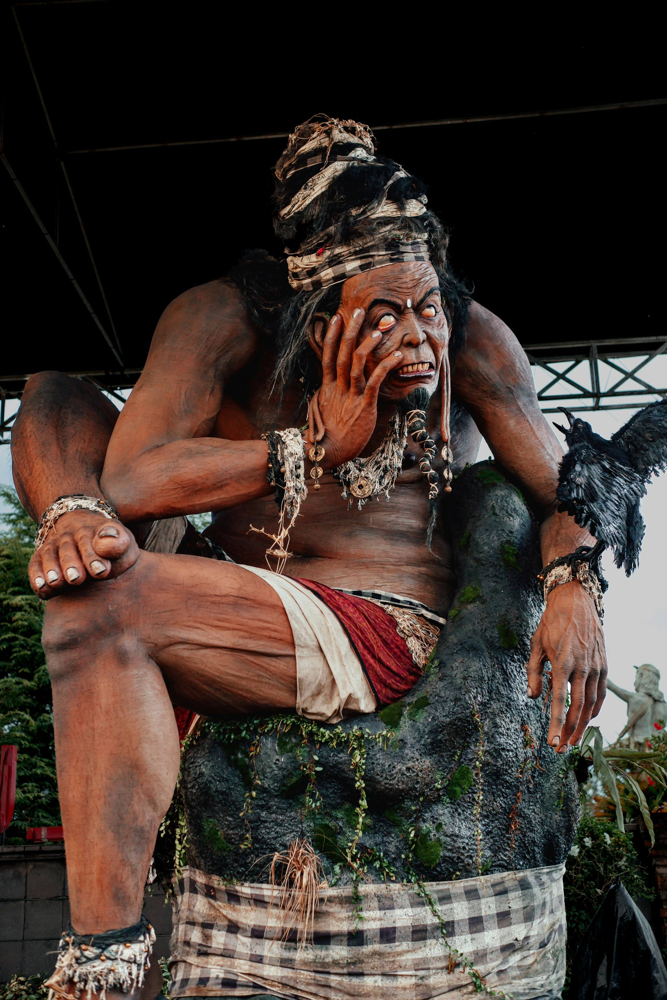

THE NIGHT OF FIRE & ART
Giant mythical statues paraded through Bali on the eve of Nyepi in one of the island’s most dramatic cultural nights.
Ogoh-Ogoh are giant handcrafted statues representing negative forces, greed, chaos, and destructive energy that must be purified.
Many villages spend weeks or even months designing and building these figures. It is a combination of art, teamwork, pride, and tradition.
Streets become alive with torches, gamelan rhythms, crowds, and dramatic movement. It is one of the most energetic nights in Bali.
After the parade, the evil represented by Ogoh-Ogoh is symbolically destroyed, preparing Bali for the silence of Nyepi.
Ogoh-Ogoh is usually held one day before Nyepi during Pangrupukan, as part of the Tawur Kesanga celebrations.
It most often takes place in March, depending on the Balinese Saka calendar.
Check the official Nyepi date first. The Ogoh-Ogoh parade is usually held on the evening before Nyepi.
Denpasar, Ubud, Kuta, Sanur, and many village crossroads across Bali.
Roads can become crowded. Arrive early to get the best viewing spot.
This is one of Bali’s busiest cultural nights, so be patient and stay aware.
The lighting, costumes, and giant statues create incredible photo opportunities.
Even though festive, it still carries spiritual meaning for local communities.


